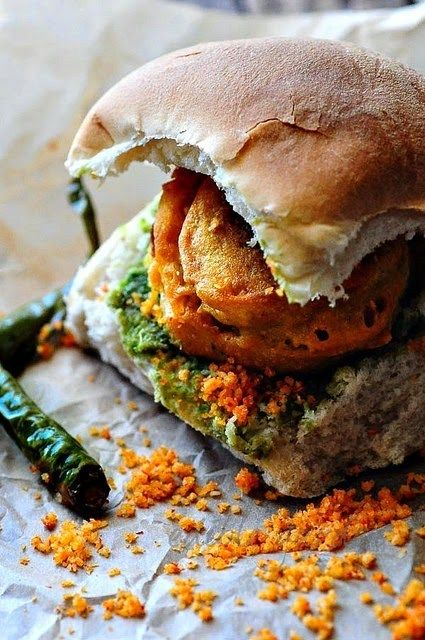

VADA PAV

DESCRIPTION
Vada Pav is a popular Indian street food from Mumbai, often called the
"Indian burger." It consists of a spicy potato fritter (called batata vada)
that is deep-fried and placed inside a soft pav (bun). The vada is typically
flavored with mustard seeds, curry leaves, garlic, green chilies, and turmeric.
To add more flavor, it's served with dry garlic chutney, green chutney,
tamarind chutney, and sometimes fried green chilies on the side.
INGREDIENTS
For the Potato Filling (Batata Vada)
- 3–4 boiled potatoes
- 1–2 green chilies (chopped)
- 1 inch ginger (grated)
- 4–5 garlic cloves (crushed)
- 1 tsp mustard seeds
- Curry leaves
- ¼ tsp turmeric powder
- Salt to taste
- 1 tbsp oil
- Fresh coriander (chopped)
For The Batter
- 1 cup besan
- Pinch of salt
- Turmeric,Salt
- Pinch of Baking Soda
For Assembling:
- 4 Pav buns
- Dry garlic chutney (or green/tamarind chutney)
- Fried green chilies (optional)
- Oil for deep frying
Instructions:
- Make the Potato Filling: Heat oil in a pan. Add mustard seeds, curry leaves, green chilies, garlic, and ginger. Sauté. Add turmeric and mashed potatoes. Add salt and coriander. Mix well. Let cool and shape into balls.
- Prepare the Batter: Mix besan, salt, turmeric, and baking soda. Add water to make a thick batter.
- Fry the Vadas: Dip each potato ball in the batter and deep fry till golden brown.
- Assemble: Slice pav, add chutney, place vada inside, and press lightly.
- Serve hot with fried green chilies and chutney. Enjoy!
Home